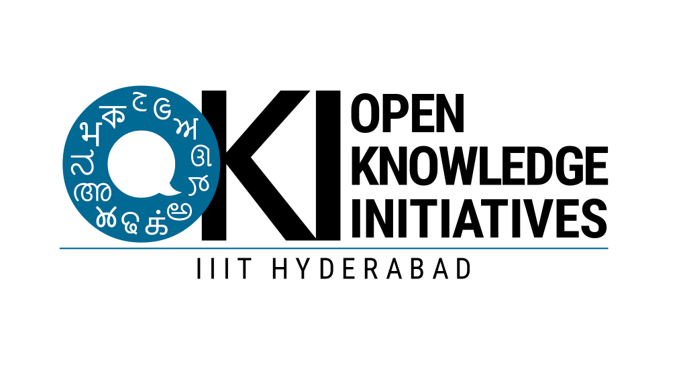

Open Source Contributions
Building the global web ecosystem at scale
Showcasing code contributions, bug fixes, and parser configurations integrated into global production environments like the Wikimedia Foundation (Wikipedia, MediaWiki core, Parsoid parser), Translatewiki, GitLab, and GitHub.
Empowering Free Knowledge
Contributing to the Wikimedia Foundation ecosystem is contributing to one of the largest web platforms in human history. Every patch, feature enhancement, or translation config merged doesn't just sit in a repository—it powers the servers that deliver knowledge to millions of readers and editors worldwide.
My open-source journey revolves around a collaborative review-based engineering model: finding tasks on Phabricator, local debugging and testing, requesting reviewer checkouts, updating patches under Gerrit/GitLab, and driving changes all the way to production deployment.
- MediaWiki Core Parsing Engagements
- Parsoid Service AST & Node Processing
- Translatewiki Config Mappings & L10n
- Git Review & Gerrit Pull Patchsets
Contribution Pipeline
How code moves from a local workspace to global production servers.
1. Task Discovery
Identifying bug reports, localization needs, or feature requests on Phabricator assigned to the RoadToWiki program or MediaWiki packages.
2. Local Debugging
Cloning repositories locally, spinning up developer environments (like MediaWiki or Parsoid services), and writing patch fixes.
3. Gerrit Push
Uploading the commit patch set to Gerrit (Wikimedia's review engine) or creating merge requests on GitLab and GitHub.
4. Code Review
Discussing implementation details with senior maintainers, running Automated CI test suites, and pushing updated patch sets.
5. Merge & Deploy
Once approved, maintainers merge the code. It goes through release windows and is deployed globally to Wikimedia production servers.
Impact Dashboard
Contributions in numbers across repositories and platforms.

5 Contributions Officially Recognized
Featured in the WikiClub Tech India — Technical Impact Report (Jan–Jun 2026), published by The Open Knowledge Initiatives (OKI) at IIIT Hyderabad.
Gerrit Review Pipeline Simulator
Interact with this terminal shell to witness my patch verification and merge process.
Key Contributions Archive
A curated list of merged patches and solved Phabricator tasks in production.
Developer Footprint
Connect with my profiles across collaborative software development channels.
Wikipedia Profile
User:Gkm563 on English & Hindi Wikis
Wikimedia Developer
Phabricator Profiles & Gerrit Patch Review
GitHub Profile
gkm563 Repositories & Contributions
GitLab Profile
gkm563 Projects & Runner Workspaces
Gerrit Code Review
Gkm563 Reviews & Merged Code Patches
Translatewiki Profile
Localization Keys & Language Onboarding